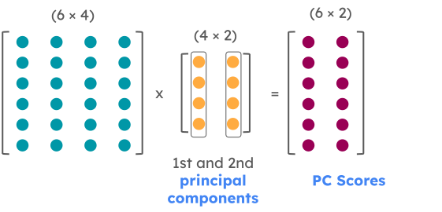
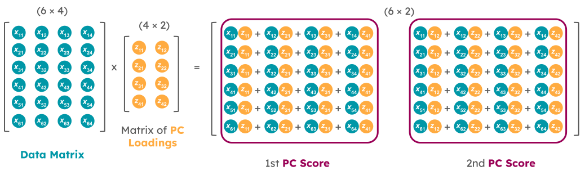
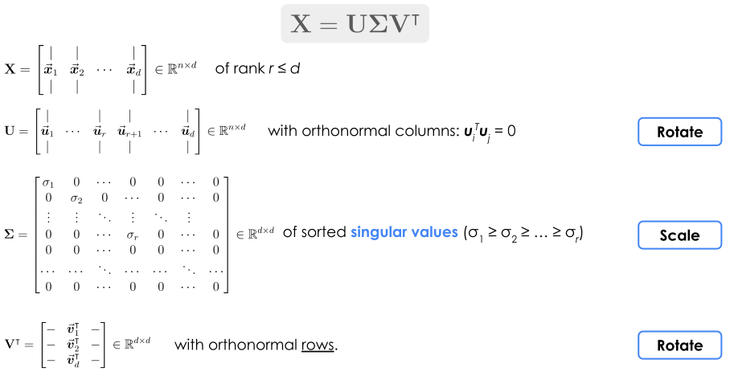
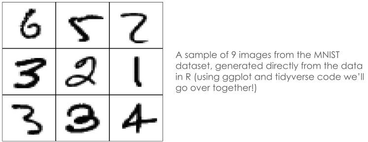

PSTAT 100: Lecture 06
Principal Components Analysis
Department of Statistics and Applied Probability; UCSB
Summer Session A, 2025
\[ \newcommand\R{\mathbb{R}} \newcommand{\N}{\mathbb{N}} \newcommand{\E}{\mathbb{E}} \newcommand{\Prob}{\mathbb{P}} \newcommand{\F}{\mathcal{F}} \newcommand{\1}{1\!\!1} \newcommand{\comp}[1]{#1^{\complement}} \newcommand{\Var}{\mathrm{Var}} \newcommand{\SD}{\mathrm{SD}} \newcommand{\vect}[1]{\vec{\boldsymbol{#1}}} \newcommand{\Cov}{\mathrm{Cov}} \newcommand{\mat}[1]{\mathbf{#1}} \newcommand{\tmat}[1]{\mathbf{#1}^{\mathsf{T}}} \newcommand{\vect}[1]{\vec{\boldsymbol{#1}}} \newcommand{\tvect}[1]{\vec{\boldsymbol{#1}}^{\mathsf{T}}} \DeclareMathOperator*{\argmax}{\mathrm{arg} \ \max} \]
Recap
Dimension Reduction
Data may be high dimensional in the sense of containing many variables.
It is possible, though, to reduce the dimensionality of a dataset while not losing too much information.
More formally, we considered the idea of projecting our data matrix into a smaller-dimensional subspace so as to preserve as much variance as possible.
- This approach is the background of Principal Components Analysis
Given a mean-centered data matrix \(\mat{X}\), we saw that the unit vector \(\vect{v}\) such that the projected data \(\mat{X} \vect{v}\) has maximal variance is the eigenvector of \((\tmat{X} \mat{X})\) with the largest associated eigenvalue.
PCA
Dimension Reduction
For example, suppose we have a 6-dimensional data matrix \(\mat{X}\) (i.e. a matrix with 6 columns), assumed to be mean-centered.
A two-dimensional representation of \(\mat{X}\) would be found by:
- Finding the eigenvectors \(\vect{v}_1\) and \(\vect{v}_2\) of \((\tmat{X} \mat{X})\) that have the two largest eigenvalues
- Projecting \(\mat{X}\) into the subspace spanned by \(\vect{v}_1\) and \(\vect{v}_2\); i.e. by performing the multiplication \[ \mat{X} \begin{bmatrix} | & | \\ \vect{v}_1 & \vect{v}_2 \\ | & | \\ \end{bmatrix} \]
PCA
Dimension Reduction
PCA
Terminology
Admittedly, the terminology surrounding PCA is a bit varied.
Here is the terminology we’ll adopt for this class:
- The principal components (PCs) are the directions along which the projected data has maximal variance.
- The elements of the PCs will be called principal component loadings (or just ‘loadings’).
- The data projected along the PCs will be called scores.
- Thus, the scores are linear combinations of the original columns of the data matrix, with coefficients determined by the PC loadings.
Again, some people use the term “Principal Component” to mean other things - we’re adopting the above terminology for this class.
PCA
Terminology
- Note that the scores are not just variables from the original data matrix; they are essentially linear combinations of several variables from the dataset.
- They can be thought of as the linear combinations of variables that provide the most information
Warning
Mean-Centering Data
Over the next few slides, we’re going to establish some linear algebra results that connect various properties of matrices.
A question we will often have to contend with is: is our data mean-centered or not?
I’ll do my best to be explicit about whether or not we are assuming mean-centered data or not.
As a general rule-of-thumb: most of the linear algebra results we will derive hold for any arbitrary data matrix, mean-centered or not.
- However, the minute we start interpreting these linear algebra quantities (e.g. eigenvectors) in terms of PCA, we’ll need to assume mean-centered data.
Matrix Spectra
Let’s start by assuming an arbitrary (not necessarily mean-centered) data matrix \(\mat{X}\). How can we go about finding the eigenvalues and eigenvectors of \((\tmat{X} \mat{X})\)?
Recall (from Math 4A and Homework 1) that there are two main ways to decompose a matrix: eigendecomposition (EVD) and singular value decomposition (SVD).
Also recall that the SVD can be thought of as a “generalization” of the EVD.
- Specifically, only diagonalizable (and, consequently, square) matrices admit an EVD, whereas any matrix admits an SVD.
Matrix Spectra
SVD
Matrix Spectra
SVD
$d
[1] 4.8348990 1.2637105 0.1636685
$u
[,1] [,2] [,3]
[1,] -0.7659032 -0.4194393 -0.4873018
[2,] -0.2615772 -0.4890773 0.8320942
[3,] -0.5873412 0.7647706 0.2648701
$v
[,1] [,2] [,3]
[1,] -0.4013705 0.8784465 0.2592944
[2,] -0.4924042 -0.4456599 0.7476131
[3,] -0.7722952 -0.1723921 -0.6114255\[ \begin{align*} \begin{pmatrix} 1 & 2 & 3 \\ 0 & 1 & 1 \\ 2 & 1 & 2 \\ \end{pmatrix} & = \left(\begin{array}{rrr} -0.766 & -0.419 & -0.487 \\ -0.262 & -0.489 & 0.832 \\ -0.587 & 0.765 & 0.265 \\ \end{array} \right) \begin{pmatrix} 4.835 & 0 & 0 \\ 0 & 1.264 & 0 \\ 0 & 0 & 0.164 \end{pmatrix} \left( \begin{array}{rrr} -0.401 & -0.492 & -0.772 \\ 0.878 & -0.446 & -0.172 \\ 0.259 & 0.748 & -0.611 \end{array} \right) \\[3mm] \mat{X} \hspace{12mm} & = \hspace{35mm} \mat{U} \hspace{68mm} \mat{\Sigma} \hspace{69mm} \tmat{V} \\ \end{align*} \]
Matrix Spectra
SVD vs. EVD
- Note: \[\begin{align*} \tmat{X} \mat{X} & = (\mat{U} \mat{\Sigma} \tmat{V})^{\mathsf{T}} (\mat{U} \mat{\Sigma} \tmat{V}) \\ & = \mat{V} \tmat{\Sigma} \tmat{U} \mat{U} \mat{\Sigma} \tmat{V} \\ & = \mat{V} \tmat{\Sigma} \mat{\Sigma} \tmat{V} \\ & = \mat{V} \mat{\Sigma}^2 \tmat{V} \\ \implies (\tmat{X}\mat{X}) \mat{V} & = \mat{V} \mat{\Sigma}^2 \tmat{V} \mat{V} \\ & = \mat{V} \mat{\Sigma}^2 \end{align*}\]
Matrix Spectra
EVD vs. SVD
Moral
If the SVD of \(\mat{X}\) is given by \(\mat{X} = \mat{U} \mat{\Sigma} \tmat{V}\), then \(\mat{\Sigma}^2\) is the matrix of eigenvalues of \((\tmat{X} \mat{X})\) and \(\mat{V}\) is the matrix of eigenvectors of \((\tmat{X} \mat{X})\).
PCA
- The eigenvectors of the matrix \((\tmat{X} \mat{X})\) represent the directions of maximal variance (i.e. if we project \(\mat{X}\) along these directions, we get maximum variance), provided \(\mat{X}\) is mean-centered.
- So, the vectors on the previous slides aren’t really interpretable as the PCs.
- But, if our matrix were mean-centered, we see that the principal components can be computed through:
- the direct eigendecomposition of \(\tmat{X} \mat{X}\),
- the singular value decomposition of \(\mat{X}\), or
- the
prcomp()function inR.
- Again, even if \(\mat{X}\) is not mean-centered, the above three methods will produce the same result. The only difference is that, under non-centered data, the result is not necessarily interpretable as the matrix of PCs.
PCA
PCA: A Quick Recap
- Multiplying the original (n × p) data matrix \(\mat{X}\) by a matrix constructed from the first d (for d ≤ n) principal components (each of dimension p) will result in an (n × d) matrix, the columns of which we call the scores.
- We obtain the scores by either:
- computing \(\mat{X} \mat{V}\) and extracting the first few columns, or
- computing \(\mat{U} \mat{\Sigma}\) and extracting the first few columns.
- We obtain the scores by either:
- Mathematical justification: \[ \mat{X} = \mat{U} \mat{\Sigma} \tmat{V} \ \implies \ \mat{X} \mat{V} = \mat{U} \mat{\Sigma} \tmat{V} \mat{V} = \mat{U} \mat{\Sigma} \]
PCA
Scores
Matrix Spectra
Variance
- Yesterday we argued that the variance of the projected data along each PC (eigenvector) is proportional to the associated eigenvalue.
- In other words, the variance of the scores can be recovered using either the EVD, SVD, or result of
prcomp().
- In other words, the variance of the scores can be recovered using either the EVD, SVD, or result of
PCA
Inverting PCA
- So, this tells us how to go from, say, a \((6 \times 4)\) matrix to a \((6 \times 2)\) matrix. How do we go back to a \((6 \times 4)\) matrix?
PCA
Inverting PCA
- Note:
\[\begin{align*} \mat{X} \mat{V} & := \mat{Z} \\ \mat{X} \mat{V} \tmat{V} & = \mat{Z} \tmat{V} \\ \mat{X} & = \mat{Z} \tmat{V} \end{align*}\]
- Motivated by this, let \(\mat{Z}\) denote a low-rank projection of \(\mat{X}\); i.e. \(\mat{Z} = \mat{X} \mat{V}_d\) where \(\mat{V}_d\) is the (p × d) matrix whose columns are the first d prinipcal components. A low-rank reconstruction of \(\mat{X}\) is then \[ \mat{X}_d := \mat{Z} \tmat{V}_d = \mat{X} \mat{V}_d \tmat{V}_d\]
PCA
Inverting PCA
Perhaps I should explain a bit further what I mean by a “reconstruction” of \(\mat{X}\).
By properties of matrix multiplication, \(\mat{X}_d\) will be of size (n × p), i.e. the same size as the original \(\mat{X}\).
However, since \(\mat{V}_d\) is of rank d, \(\mat{X}_d\) will be of rank d.
So, this is what I mean by a “low-rank reconstruction” of \(\mat{X}\): a matrix whose dimensions are the same as \(\mat{X}\), but whose rank is smaller than that of \(\mat{X}\).
We can define the reconstruction error to be \(\mathrm{R}(\mat{X}_d, \mat{X}) := \| \mat{X}_d - \mat{X} \|^2\), where \(\| \cdot \|\) denotes an appropriately-defined matrix norm.
Example
Whew, that’s a lot of math!
Let’s work through an example together. We’ll start off with \[ \mat{X} = \begin{pmatrix} 1 & 2 & 3 & 1 \\ 2 & 0 & 1 & 2 \\ 3 & 0 & 0 & 1 \\ 2 & 1 & 1 & 0 \\ 0 & 1 & 0 & 0 \\ 2 & 1 & 1 & 1 \\ \end{pmatrix} \]
Example
- Over the next few slides, I’ll project \(\mat{X}\) into a smaller-dimensional subspace using the first 2, 3, and 4 principal components, then invert the projection and display the “recovered” \(\mat{X}\) (which will be the mean-centered version of \(\mat{X}\)):
Code
[,1] [,2] [,3] [,4]
[1,] -0.6666667 1.1666667 2 0.1666667
[2,] 0.3333333 -0.8333333 0 1.1666667
[3,] 1.3333333 -0.8333333 -1 0.1666667
[4,] 0.3333333 0.1666667 0 -0.8333333
[5,] -1.6666667 0.1666667 -1 -0.8333333
[6,] 0.3333333 0.1666667 0 0.1666667
attr(,"scaled:center")
[1] 1.6666667 0.8333333 1.0000000 0.8333333Example
2-Dimensional Subspace
Multiply \(\mat{X}\) by the matrix containing the first two principal components:
Backwards-project using the first two principal components:
[,1] [,2] [,3] [,4]
[1,] -0.6824534 1.15684238 1.99860514 0.1849387
[2,] 0.9013719 -0.43233075 0.01912272 0.5477820
[3,] 1.1362868 -0.97030623 -1.00802682 0.3830813
[4,] -0.1577576 0.01711215 -0.14544752 -0.1382030
[5,] -1.4188787 0.29648176 -0.96215851 -1.1399328
[6,] 0.2214310 -0.06779931 0.09790498 0.1623338 [,1] [,2] [,3] [,4]
[1,] -0.6666667 1.1666667 2 0.1666667
[2,] 0.3333333 -0.8333333 0 1.1666667
[3,] 1.3333333 -0.8333333 -1 0.1666667
[4,] 0.3333333 0.1666667 0 -0.8333333
[5,] -1.6666667 0.1666667 -1 -0.8333333
[6,] 0.3333333 0.1666667 0 0.1666667
attr(,"scaled:center")
[1] 1.6666667 0.8333333 1.0000000 0.8333333Example
3-Dimensional Subspace
Multiply \(\mat{X}\) by the matrix containing the first three principal components:
Backwards-project using the first two principal components:
[,1] [,2] [,3] [,4]
[1,] -0.6668552 1.16553247 2.00064836 0.16605904
[2,] 0.3488162 -0.74016994 -0.05325683 1.21657701
[3,] 1.3283527 -0.86330271 -0.98286801 0.15061120
[4,] 0.3560513 0.30336477 -0.07814344 -0.76010018
[5,] -1.6681744 0.15759445 -0.99481387 -0.83819359
[6,] 0.3018094 -0.02301903 0.10843378 0.06504651 [,1] [,2] [,3] [,4]
[1,] -0.6666667 1.1666667 2 0.1666667
[2,] 0.3333333 -0.8333333 0 1.1666667
[3,] 1.3333333 -0.8333333 -1 0.1666667
[4,] 0.3333333 0.1666667 0 -0.8333333
[5,] -1.6666667 0.1666667 -1 -0.8333333
[6,] 0.3333333 0.1666667 0 0.1666667
attr(,"scaled:center")
[1] 1.6666667 0.8333333 1.0000000 0.8333333Example
4-Dimensional Subspace
Multiply \(\mat{X}\) by the matrix containing the four three principal components:
PC1 PC2 PC3 PC4
[1,] -2.22141095 0.9476208 0.02606604 0.001453105
[2,] 0.78993734 0.8220772 -0.92336792 -0.119358571
[3,] 1.82811089 0.2313481 0.32095854 0.038396007
[4,] -0.02366601 -0.2547062 0.85861868 -0.175134144
[5,] -0.49186600 -2.0209854 -0.41659441 0.011623098
[6,] 0.11889473 0.2746455 0.13431906 0.243020505Backwards-project using the first two principal components:
[,1] [,2] [,3] [,4]
[1,] -0.6666667 1.1666667 2.000000e+00 0.1666667
[2,] 0.3333333 -0.8333333 7.535993e-17 1.1666667
[3,] 1.3333333 -0.8333333 -1.000000e+00 0.1666667
[4,] 0.3333333 0.1666667 -3.215917e-17 -0.8333333
[5,] -1.6666667 0.1666667 -1.000000e+00 -0.8333333
[6,] 0.3333333 0.1666667 -3.564466e-17 0.1666667 [,1] [,2] [,3] [,4]
[1,] -0.6666667 1.1666667 2 0.1666667
[2,] 0.3333333 -0.8333333 0 1.1666667
[3,] 1.3333333 -0.8333333 -1 0.1666667
[4,] 0.3333333 0.1666667 0 -0.8333333
[5,] -1.6666667 0.1666667 -1 -0.8333333
[6,] 0.3333333 0.1666667 0 0.1666667
attr(,"scaled:center")
[1] 1.6666667 0.8333333 1.0000000 0.8333333Screeplots
How Much Variance?
So, as the last demo illustrated: as we increase the dimension onto which we are projecting, the reconstructed matrix will become more and more similar to the original matrix.
As always, there’s a tradeoff.
- On the one hand, we want our reconstructed matrix to be as similar to the original as possible.
- On the other, however, we want some dimension reduction.
- So, how much dimension reduction should we perform?
To answer this qeustion, we’ll go back to a fact from yesterday’s lecture: the variance of the data projected along the kth principal component is proportional to \(\lambda_k\), the associated eigenvalue.
Screeplots
How Much Variance?
Therefore, the proportion of the total variance captured by the kth principal component (i.e. the proportion of the total variance present in the variance of the data projected along the kth PC) is given by \[ s_k := \frac{\lambda_k}{\sum_{k} \lambda_k} = \frac{\sigma_k^2}{\sum_{k} \sigma_k^2} \] where \(\sigma_k\) is the kth singular value of \(\mat{X}\).
A plot of sk vs k is called a screeplot, named after a particular rock formation.
Screeplots
How Much Variance?
- In practice, to figure out the ideal number of PCs to use, look for an “elbow” in the screeplot.
Code
set.seed(100) ## for reproducibility
S_Mat <- toeplitz(c(10, rep(1, 5)))
X <- mvrnorm(n = 10, mu = rep(0, 6), Sigma = S_Mat)
PCA_X <- prcomp(X, scale. = TRUE)
s_k <- PCA_X$sdev^2 / sum(PCA_X$sdev^2)
data.frame(k = 1:ncol(X), y = s_k) %>%
ggplot(aes(x = k, y = s_k)) +
geom_point(size = 5) + geom_line(linewidth = 1) +
theme_minimal(base_size = 24) + ylab("prop. var") +
ggtitle("Example Screeplot")
The first five PCs capture around nearly 94% of the total variance!
So, for this matrix, around 5 dimensions is sufficient; the sixth contributed very little toward the total variance.
Live Demo!
Live Demo
Time for another live demo! Feel free to boot up your laptops and follow along. In this demo we’ll take a look at the notion of reconstruction error, which essentially is a measure of how poorly our reconstructed matrix is doing at approximating the original matrix.
Background: The MNIST (Modified National Institute of Standards and Technology) database contains around 70,000 handwritten digits, collected from a combination of high school students and US Census Bureau employees. Each digit is stored as a 28px by 28px image, with an additional classifier label (indicating what digit the image is supposed to be).

Next Time
- In lab today, you will work through another example of PCA.
- Specifically, you will explore the voting habits of the 118th House of Representatives.
- Tonight’s lab also marks the end of material that is fair game for the first ICA.
- To be clear, PCA is fair game for the ICA.
- We’ll spend tomorrow’s lecture reviewing for the ICA, so please come with questions!

PSTAT 100 - Data Science: Concepts and Analysis, Summer 2025 with Ethan P. Marzban